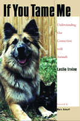

<body bgcolor="#FFFFFF" text="#000000" link="#0000FF" vlink="#CC0000" alink="#CC0000"><center><hr width="350" size="1" align="center" noshade>Narrowing the gulf between humans and animals<hr width="350" size="1" align="center" noshade><p><a href="https://cdcshoppingcart.uchicago.edu/Cart/ChicagoBook.aspx?ISBN=9781592132409&&PRESS=temple" target="_top">Buy this book!</a> | <a href="https://cdcshoppingcart.uchicago.edu/Cart/Cart.aspx?PRESS=temple" target="_top">View Cart</a> | <a href="https://cdcshoppingcart.uchicago.edu/Cart/Cart.aspx?PRESS=temple" target="_top">Check Out</a></p><p></p></center><!--none//--><h1>If You Tame Me</h1>
<H2>Understanding Our Connection with Animals</H2>
<H2><!-- Foreword by Marc Bekoff --></H2>
<h3>Leslie Irvine, foreword by Marc Bekoff</h3>
<P>cloth 1-59213-240-5 $70.50, Mar 04, <FONT COLOR=#990033>Available</FONT>
<br>paper 1-59213-241-3 $26.95, Mar 04, <FONT COLOR=#990033>Available</FONT>
<br>Electronic Book 1-59213-791-1 $26.95 <FONT COLOR=#990033>Available</FONT>
<BR> 240 pp
6x9
</P><BLOCKQUOTE><I>"Leslie Irvine's </i>If You Tame Me<i> is a fine book, one that introduces modern ideas about the self and the importance of emotions both for humans and for animals. I hope that many people will read this, look at their companion animals the way Irvine urges us to, and think about the implications. I love it when she gets personal; I only wish there were more passages about her own animals. She is good on anthropomorphism and why spoken language is not the be-all and end-all of intelligence. I learned much from reading this excellent book. I wish it a long life!"</i>
<br>&#151<b>Jeffrey Masson</b>, author of <i>When Elephants Weep: The Emotional Lives of Animals</i> and <i>The Nine Emotional Lives of Cats: A Journey into the Feline Heart</i><i></I></BLOCKQUOTE>
<p>Nearly everyone who cares about them believes that dogs and cats have a sense of self that renders them unique. Traditional science and philosophy declare such notions about our pets to be irrational and anthropomorphic. Animals, they say, have only the crudest form of thought and no sense of self at all. Leslie Irvine's <i>If You Tame Me</i> challenges these entrenched views by demonstrating that our experience of animals and their behavior tells a different story.
<p>Dogs and cats have been significant elements in human history and valued members of our households for centuries. Why do we regard these companions as having distinct personalities and as being irreplaceable? Leslie Irvine looks closely at how people form "connections" with dogs and cats available in adoption shelters and reflects on her own relationships with animals. <i>If You Tame Me</i> makes a persuasive case for the existence of a sense of self in companion animals and calls upon us to reconsider our rights and obligations regarding the non-human creatures in our lives.
<BR>&nbsp;<h2>Excerpt</h2><P>Excerpt available at <a href="http://www.temple.edu/tempress">www.temple.edu/tempress</a></p>
<BR>&nbsp;<h2>Reviews</h2>
<p><i>"This book is a major effort in developing a conceptual and theoretical framework for looking at issues of animal selves and human-animal intersubjectivity. It is an important work that extends existing sociological research in both social psychology and animal behavior. Rich with ideas and insights, </i>If You Tame Me<i> is must reading for anyone wrestling with the question of how we can know the animal other."</i>
<br>&#151<b>Janet and Steve Alger</b>, authors of <i><a href="1606_reg.html" target="_top">Cat Culture: The Social World of a Cat Shelter</a></i>
<p><i>"Anyone who has experienced connection with an animal will appreciate Leslie Irvine's systematic establishment of the notion of animal selves."</i>
<br>&#151<b><i>Boulder Daily Camera</i></b>
<p><i>"I love Leslie's book. It is accessible and at the same time well researched and scholarly, filled with 'hard science' and anecdotes."</i>
<br>&#151<b>Marc Bekoff</b>, from the Foreword
<p><i>"[The book] makes a persuasive case for the existence of a sense of self in companion animals and calls upon us to reconsider our rights and obligations regarding the non-human creatures in our lives."</i>
<br>&#151<b><i>Pets Quarterly</i></b>
<p><i>"This volume is an important contribution to the recent explosion of sociological analyses of the roles of animals in human life."</i>
<br>&#151<b><i><a href="http://www.journals.uchicago.edu/AJS/journal/issues/v110n6/110621/110621.html" target="new">The American Journal of Sociology</a></i></b>
<p><i>"With much pleasure and interest I read Irvine's book about dogs, cats, and their 'guardians' (the word Irvine uses for people owning companion animals). Marc Bekoff's foreword is very friendly and a good appetizer: it prepares you and makes you curious about the chapters to come.... This sympathetic book is rich in ideas and will generate discussion! This is exactly what it needs to do. It is a first step toward an empirically grounded theory about animal selfhood, and hopefully inspire fellow researchers to develop it further. The book will also most certainly inspire animal lovers, who will gain more understanding about cats and dogs."</i>
<br>&#151<b><i>Anthrozoos</i></b>
<p><i>"Refreshingly, Irvine takes the thorny issue of anthropomorphism more seriously than some of her peers and situates our current cultural understandings of animals in their historical context. In a brief but illuminating historical account, Irvine traces the changing social construction of animals in the realms of philosophy, science, politics, and law and shows how shifting meanings affect the treatment and status of animals."</i>
<br>&#151<b><i>Sociological Forum</i></b>
<BR>&nbsp;<h2>Contents</h2><P>
<p>Foreword: To Know Them Is to Be Them &#150 Marc Bekoff
<br>Acknowledgments
<br>Introduction: The Fox's Wisdom
<br>1 How and Why
<br>2 Them and Us
<br>3 From Pets to Companion Animals
<br>4 Looking at Animals/Glimpses of Selves
<br>5 The Adopters: Making a Match
<br>6 Rethinking the Self: Mead's Myopia
<br>7 Self versus Other: The Core Self
<br>8 Self with Other: Intersubjectivity
<br>Conclusion: Putting Theory into Practice
<br>Appendix: Methods
<br>Notes
<br>References
<br>Index
</P><BR>&nbsp;<H2>About the Author(s)</H2>
<table><tr><td valign="top"><img src="/tempress/authors/1725_au1.gif" height="90" width="75"></td><td width="100%" valign="middle"><p><b>Leslie Irvine</b> is Assistant Professor of Sociology at the University of Colorado, Boulder, and the author of <i>Codependent Forevermore: The Invention of Self in a Twelve Step Group</i>.</P></td></tr></table><P><b>Marc Bekoff</b> is Professor of Biology at the University of Colorado, Boulder; his most recent books are: <i>Minding Animals: Awareness, Emotions, and Heart</i> and (co-authored with Jane Goodall) <i>The Ten Trusts: What We Must Do to Care for the Animals We Love</i>.</P>
<BR><H2>Subject Categories</H2>
<p><A HREF="/tempress/animal_soc.html" TARGET="_top">Animals and Society</a>
<BR><A HREF="/tempress/sociology.html" TARGET="_top">Sociology</a>
<BR><A HREF="/tempress/philosophy.html" TARGET="_top">Philosophy and Ethics</a>
</p>
<BR><h2 class="inpageheading">In the series</H2>
<P><I><a href="http://www.temple.edu/tempress/animals.html" onMouseOver="window.status='Click for other books in this series!'; return true;" onMouseOut="window.status=''; return true;" target="_top">Animals, Culture, and Society</a></i>, edited by Arnold Arluke and Clinton R. Sanders.
</p><p><I>Animals, Culture, and Society</I>, edited by Arnold Arluke and Clinton R. Sanders, is concerned with probing the complex and contradictory human-animal relationship through the publication of accessible books that consider the place of animals in our culture, our literature, our society, and our homes.</p>
<p align="center"><a href="https://cdcshoppingcart.uchicago.edu/Cart/ChicagoBook.aspx?ISBN=9781592132409&&PRESS=temple" target="_top">Buy this book!</a> | <a href="https://cdcshoppingcart.uchicago.edu/Cart/Cart.aspx?PRESS=temple" target="_top">View Cart</a> | <a href="https://cdcshoppingcart.uchicago.edu/Cart/Cart.aspx?PRESS=temple" target="_top">Check Out</a></p><p><font face="Arial" size="1"><a href="copyright.html" onMouseOver="window.status='Web Copyright Policy';return true;" onMouseOut="window.status=''" title="Web Copyright Policy">&copy;</a> 2015 <a href="http://www.temple.edu" target="new" onMouseOver="window.status='Link to Temple University home page';return true;" onMouseOut="window.status=''" title="Link to Temple University home page">Temple University</a>. All Rights Reserved. http://www.temple.edu/tempress/titles/1725_reg.html</font></p>